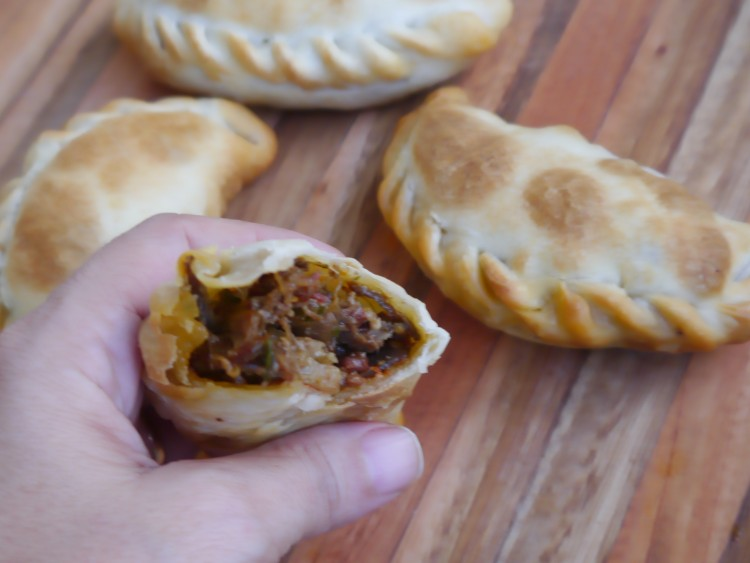

Empanadas de osobuco
Aquí les traemos una receta sin preámbulos. Una de las recetas de empanadas que sin duda robarán su corazón: son unas empanadas de osobuco.

Descripción:
Empanadas de carne pero ni carne cortada a cuchillo ni carne picada: carne pisada. ¿Y por qué empanadas de carne pisada? porque queda tan tan tierna que se pisa a tenedor. Y el sabor… el sabor de esta receta de empanadas es descomunal. La carne es tan tan mantecuchi que acaba pudiéndose pisar con tenedor, una maravilla. Además son súper económicas, el osobuco es una carne muy económica. De la cantidad que ven ahí me salieron unas 20 empanadas. Los dejo con la receta, les va a encantar.

Ingredientes:
- 12 tapas para empanadas
- 1/2 kg. de carne picada
- 1 cebolla
- 2 dientes de ajo
- 1/2 pimiento morrón rojo
- 1 tomate
- 2 cdas. de puré de tomates
- 1 puñado de aceitunas
Pasos:
- En una olla con aceite caliente agregar la cebolla y el morrón. Dejar dorar unos minutos y cuando estén a medio cocer, agregar el ajo y un poco de sal.
- Subir el fuego y agregar de una toda la carne picada. Mover la carne para que no quede pegada. Cuando la carne esté sellada agregar el tomate en cubos y las 2 cdas de puré de tomates. Condimentar y mezclar bien. Tapar (no del todo) #TapaEnChanfle y dejar cocinar una media hora revolviendo de a poco.
- Sacar del fuego y dejar enfriar en la olla. Agregar las aceitunas picadas y mezclar bien. (En este paso pueden agregar cualquier otra cosa que le quieran poner: huevo duro, pasas, papa, etc.
- Repartir el relleno en las tapas de empanada, y cerrar con un repulgue.
- Poner nuestras empanadas de carne en una placa y llevar a horno fuerte hasta que estén doradas!